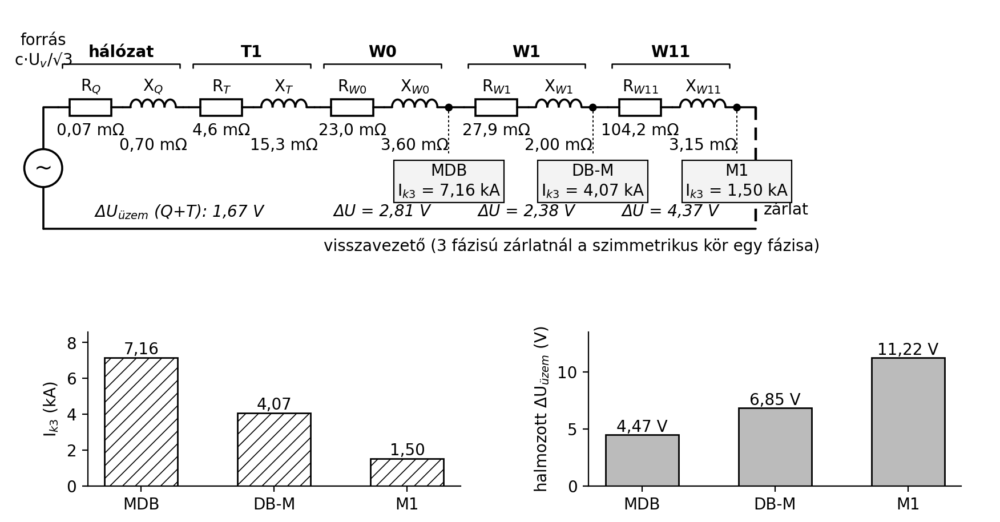

Egy üzemi csarnokban a karbantartó szerelőnek új gépsort kell bekötnie a meglévő elosztószekrényből. Az elosztó és a gép közötti távolság jelentős, a kábeltálcán több meglévő kábel halad. A szerelőnek azt kell eldönteni: mekkora keresztmetszetű kábelt válasszon, mekkora kismegszakítót tegyen elé, és mi történik akkor, ha a motor elindul, vagy ha zárlat keletkezik a kábel végén. Ha alulméretezi, a motor nem indul el, vagy a védelem nem old ki időben. Ha túlméretezi, szükségtelenül drága lesz a kivitelezés. Ebben az alfejezetben egyszerű, kézzel számolható módszereket tanulunk meg ipari leágazások méretezésére – úgy, hogy a hálózati adatoktól (trafó) a gépig bezárólag minden feltételt ellenőrizzünk.
Az ipari méretezés nem egyetlen képlet, hanem egy ellenőrzési lánc. A lánc elemei: a középfeszültségű hálózat és a transzformátor (mint zárlati forrás), az elosztószekrény sínje, a leágazó kábel, a leágazás védelme és a fogyasztó (legtöbbször motor). A lánc minden elemén egyszerre három feltételnek kell teljesülnie: terhelhetőség, feszültségesés, zárlati kioldás.
A lánc elemei sorba kapcsolt impedanciák: a hálózat, a transzformátor és a kábelek ellenállása () és reaktanciája () összeadódik, . Az alábbi rajz a következő szakaszban bemutatott „Műhely” esettanulmány (Kisüzem) láncát mutatja, a csomópontokban a háromfázisú zárlati árammal és a szakaszok üzemi feszültségesésével.

Ábraolvasás. A forrásoldalon (hálózat és transzformátor) a reaktancia dominál: a transzformátor -ja háromszorosa az -nek. A kábeleknél fordított a helyzet: már a 35 mm²-es W0-nál is az ellenállás a nagyobb, a 6 mm²-es W11-nél pedig az (104,2 mΩ) mellett az (3,15 mΩ) elhanyagolható – ezért szabad 25 mm² alatt a kábel reaktanciáját elhagyni. A lánc vége felé a zárlati áram gyorsan csökken (7,16 → 4,07 → 1,50 kA), tehát a kioldási feltételt mindig a leágazás végén kell ellenőrizni. A feszültségesés ezzel szemben halmozódik: az M1 kapcsain üzemben összesen kb. 11,2 V (a forrással együtt). Melyik elem cseréje csökkentené leginkább az M1 kapcsán a zárlati áram csökkenését: a nagyobb transzformátor vagy a vastagabb W11?
A villamos méretezés kiindulópontja az, hogy mekkora áramot vesz fel a fogyasztó, illetve fogyasztói csoport. Egy gép adattáblájáról leolvashatjuk a névleges teljesítményt () vagy a névleges áramot (). Egy leágazáson azonban gyakran több gép is van, és nem mindegyik működik egyszerre teljes terhelésen. Ezt az arányt egyidejűségi tényezőnek nevezzük.
Definíció. Az egyidejűségi tényező (, ugyanaz, mint az előző alfejezetben, az Ipari elosztóhálózatok jellemzői és topológiája alfejezetben; idegen forrásokban gyakran vagy betűvel is jelölik) megadja, hogy az összes beépített teljesítmény mekkora hányadával kell egyidejűleg számolni. Értéke ; ipari üzemben jellemzően 0,5–1,0, lakóépületben ennél kisebb.
Összefüggés. Az üzemi (tervezési) teljesítmény:
illetve háromfázisú áramkörben az üzemi áram:
ahol az egyidejűleg felvett hatásos teljesítmény (W), a vonali feszültség, pedig a fogyasztói csoport várható teljesítménytényezője. Motoroknál a névleges hatásos teljesítmény mellett az adattáblán szereplő hatásfokkal is számolni kell, ha a felvett villamos teljesítményt keressük:
Ezt a pontos motoráram-számításnál a Szlip, nyomaték, jelleggörbe és adattábla tárgyalja, itt annyit használunk belőle, hogy tengelyteljesítményű motornál a hálózatból felvett hatásos teljesítmény jellemzően –, ha a hatásfok 85–90 % körüli. (ellenőrizendő: konkrét motortípus adattáblája szerint.)
Szabály. Az üzemi áramot mindig a legrosszabb üzemszerű állapotra számoljuk, nem a maximális beépített teljesítményre, de a rövid távú túlterhelésre (indítás) a zárlati és feszültségesési vizsgálatban külön kitérünk.
A feszültségesés számításának alapképleteit már a Feszültségesés és a vezeték méretezése alfejezetben bevezettük. Ipari leágazásoknál a méretezés szempontjából a legkritikusabb állapot gyakran nem a névleges üzem, hanem a motor indítása.
Törvény. Szimmetrikus háromfázisú terhelésnél a feszültségesés:
ahol és a vezeték méterre eső ellenállása és reaktanciája, az egy vezeték hossza, a vonali áram, pedig a fogyasztó fázisszöge. Kis keresztmetszetű kábelnél () a reaktancia elhanyagolható, és visszakapjuk a
alakot, ahol rézre (20 °C-on, szemléltető érték).
Motorindításkor az indítási áram nagysága rendszerint , az indítási teljesítménytényező pedig alacsony, jellemzően . Mivel az indítási kisebb, a feszültségesés kis keresztmetszetű kábelnél nem az áram arányában, hanem jellemzően a névleges érték 2–4-szeresére nő (például és mellett -szeresére); nagyobb keresztmetszetnél a reaktív tag miatt ennél nagyobb is lehet. Ezért az indítási állapotot külön kell ellenőrizni.
Szabály. A motorindítási feszültségesést úgy ellenőrizzük, hogy a motor kapcsain a feszültség ne csökkenjen a mágneskapcsoló megtartási feszültsége, illetve a motor indítónyomatéka miatt kritikus érték alá. Ipari hálózaton elfogadható gyakorlat, ha az indítási feszültségesés nem haladja meg a 10 %-ot, de ez motoronként és szabványonként változik. (ellenőrizendő: aktuális MSZ HD 60364, gyártói indítási feltételek.)
Üzemben nem egyetlen kábel esését kell nézni, hanem a betáplálási ponttól a fogyasztóig vezető teljes láncét: fővezeték, alelosztó-betáp és végáramkör esése összeadódik. A megengedett érték a táplálás módjától és a fogyasztó jellegétől függ:
| Táplálás | Világítás | Egyéb fogyasztó |
|---|---|---|
| közcélú kisfeszültségű hálózatról (a fogyasztásmérőtől) | 3 % | 5 % |
| saját transzformátorról (középfeszültségű csatlakozás) | 6 % | 8 % |
A keretet előre elosztjuk (például fővezeték legfeljebb 1 %, alelosztó-betáp 1,5 %, végáramkör 2,5 %), és minden szakaszt a saját részére méretezünk. Az indítási feszültségesést ettől külön vizsgáljuk. A „Műhely” esettanulmány (lásd lent) M1 láncában a kábelek üzemi esése: W0 0,70 % + W1 0,60 % + W11 1,09 % = 2,39 % (tanulási példa), ez a szigorúbbik, 5 %-os egyéb fogyasztói keretbe is belefér.
Ahhoz, hogy a leágazás végén kialakuló zárlati áramot meghatározzuk, ismernünk kell a hálózati (trafó) zárlati impedanciáját és a kábel impedanciáját. A teljes hurok impedanciája:
Nagyipari elosztókban sokszor elég a transzformátor impedanciájával és a kábel ellenállásával számolni, a kábel reaktanciáját 25 mm² alatt elhanyagoljuk, a hálózat előzárlati teljesítményét pedig csak akkor vesszük figyelembe, ha nagyon pontos értékre van szükség. A transzformátor impedanciája a névleges adatokból jó közelítéssel:
ahol a rövidzárási feszültség (%), a transzformátor névleges látszólagos teljesítménye (VA), pedig a vonali feszültség (V). A képlet a transzformátor rövidzárási méréséből származik: a rövidzárási feszültség az a feszültség, amely a névleges áramot hajtja át a rövidre zárt transzformátoron, így éppen a fenti alakot adja. Ugyanebből következik a transzformátornál már megismert gyors becslés a kapocszárlati áramra, (Egyfázisú transzformátor: működés, felépítés, üresjárás és rövidzárás; háromfázisú tekercsadatok: Háromfázisú transzformátor és kapcsolási csoportok). A zárlatszámításhoz tartozó mellett ne keverd össze a terhelésbecslés tényezőjét a szekrény RDF-jével (Az elosztóberendezések szabványai és típusai).
A zárlati áram háromfázisú zárlatnál:
ahol feszültségkorrekciós tényező, amely kisfeszültségen jellemzően közötti, figyelembe véve a hálózati feszültségeltérést. (ellenőrizendő: aktuális szabvány szerinti c-tényező.)
A kisüzemek többsége a közcélú kisfeszültségű hálózatról kap ellátást. Ilyenkor a trafót nem ismered, hanem a hálózati engedélyestől kapod meg (vagy jogosult személy méri) a csatlakozási pont zárlati áramát, illetve hurokimpedanciáját, és a saját kábeleidet ehhez adod hozzá.
1. A hálózat előimpedanciája. Ha az engedélyes a hálózat előzárlati teljesítményét () adja meg:
(példaadat; ellenőrizendő: MSZ EN 60909-0). Egy 400 kVA-es transzformátor 16 mΩ-os impedanciája mellett ez kicsi, ezért szokás elhanyagolni; 1000 kVA körül és fölötte, ahol már 10 mΩ alatt van, érdemes figyelembe venni.
2. Továbbszámolás a megadott hurokimpedanciából. A csatlakozási ponton adott (példaadat, a „Műhely” főelosztójának értéke): (L–PE), . Mekkora a legkisebb zárlati áram a W1 (16 mm², 25 m, ) végén? Az üzemmeleg oda-vissza vezetőellenállást egyszerűen hozzáadjuk, a kábel reaktanciáját elhagyjuk (felső becslés -re):
Az esettanulmány komplex (R és X szerinti) számítása ugyanitt 1,69 kA-t ad: az algebrai összeadás kissé a biztonságos oldalon van.
3. Szabály. A mért a mérés pillanatának hálózati állapotát tükrözi (átkapcsolás, trafócsere megváltoztathatja). Hagyj tartalékot, a kioldás igazolásához a legkedvezőtlenebb (legnagyobb -ű), a megszakítóképességhez a legnagyobb zárlati áramot kérd az engedélyestől (ellenőrizendő: hálózati engedélyes adatszolgáltatása). A mérést lásd: Mérések II.: hurokimpedancia, zárlati áram, FI-vizsgálat; lakossági példa: Vezetékvédelem, koordináció és zárlati áram.
A leágazás védelmét és vezetékét együtt kell megválasztani, és a két feltételt egyszerre ellenőrizni:
Szabály. A méretezés lépései:
Ezt a lépéssort használjuk a Csatlakozási hely és ipari fogyasztói berendezés kialakítása alfejezetben is.
Minden leágazásról töltsd ki ezt a lapot: vizsgán és a munkahelyen is így dokumentáljuk a méretezést. A kitöltött oszlop az esettanulmány (lásd lent) M1 kompresszor-leágazása, tanulási példaadatokkal (ellenőrizendő: gyártói adatlapok, terhelhetőségi táblázat).
| Sor | Rovat | Kitöltött példa: M1 |
|---|---|---|
| 1 | leágazás jele | DB-M, Q11 – W11 |
| 2 | fogyasztó: , , , , indítás | 15 kW; 0,91; 0,85; 28,0 A; közvetlen, |
| 3 | 28,0 A | |
| 4 | védelem: típus, / , karakterisztika, | motorvédő Q11, A, kioldás A; (adatlap) |
| 5 | kábel: típus, keresztmetszet, hossz | 4G6, 35 m |
| 6 | szerelési mód, korrekció, | tálcán (E), 0,88; 37,8 A |
| 7 | : igen | |
| 8 | a túlterhelés ellen a beállított motorvédő véd: igen (adatlap) | |
| 9 | üzemben (kábel) | 4,37 V; 1,09 % |
| 10 | indításkor (teljes lánc) | 33,4 V; 8,35 % (határ 10 %) |
| 11 | a beépítési helyen | 4,07 kA (DB-M sín) |
| 12 | a kábel végén | 578 A |
| 13 | (gyors kioldás) | 416 A; % tűréssel 499 A |
| 14 | gyors kioldás: | : igen |
| 15 | megszakítóképesség | adatlap szerint igazolandó (4,07 kA) |
| 16 | szelektivitás az előtét-védelemmel (F1 gG 63 A) | várhatóan igen (gyártói táblázat) |
| 17 | megjegyzés, dátum, aláírás |
Ha valamelyik ellenőrzés nem teljesül, a javítás sorrendjét a folyamatábra mutatja. Javítás után az összes ellenőrzést újra el kell végezni, mert például a nagyobb keresztmetszet a zárlati áramot is megváltoztatja.
A munkalapot a 8. feladatban önállóan töltöd ki.
Egy üzemi csarnokban egy régi esztergagépet korszerű CNC-gépre cseréltek. A gép telepítése után a kezelő azt tapasztalta, hogy a gép indításakor a mágneskapcsoló többször is bizonytalanul húzott be, a monitor képe villant, és a gép időnként reteszhibát jelzett. A karbantartó megmérte a lakatfogóval az indítási áramot, és azt találta, hogy a motor 170 A-t vett fel az indítás pillanatában. A régi kábel -es volt, 70 m hosszúságú. A feszültségesés mérése indításkor 45 V-nál is többet mutatott a kábelen, így a gép kapcsain a feszültség 400 V helyett csak 355 V körül volt. A megoldás nem a kismegszakító cseréje volt, hanem a leágazó kábel keresztmetszetének növelése -re. Ezután az indítási feszültségesés 18 V alá csökkent, és a gép hibátlanul működött. A hiba tanulsága: a kábelt nemcsak a névleges áramra, hanem a gépek indítási áramára is méretezni kell.
Ábraolvasás. A kalkulátorban (a HTML-kiadásban interaktívan) beállítod a transzformátor látszólagos teljesítményét (, 100–2000 kVA), a kábel hosszát (5–200 m), a keresztmetszetet (1,5–35 mm²), a motor névleges áramát (5–100 A) és a kismegszakító jellegét (B, C, D). A kalkulátor kiírja a transzformátor és a kábel impedanciáját, a kábel végén a legnagyobb (háromfázisú, ) és a legkisebb (fázis–védővezető, üzemmeleg, ) zárlati áramot és az indítási feszültségesést (6· indítási árammal), és jelzi, ha a gyors kioldást eldöntő a választott kismegszakító mágneses kioldási határa alá esik. Próbáld ki: a 630 kVA, 10 mm², C32 beállításból indulva növeld a kábelhosszt, és figyeld, mikor esik a legkisebb (L–PE) zárlati áram, a C32 felső mágneses határa (320 A) alá; ugyanígy nézd meg, hogyan nő a feszültségesés 4 mm²-es keresztmetszetnél. A statikus ábra a legkisebb (L–PE) zárlati áramot és az indítási feszültségesést a kábelhossz függvényében mutatja 4, 10 és 35 mm²-re, a fejezet példájának adataival (630 kVA, 28 A-es motor).

A kalkulátor szemlélteti, hogyan tolja le a kábel a zárlati áramot: minél hosszabb és minél vékonyabb a kábel, annál kisebb értéket kapunk, és egy ponton túl a védelem mágneses tartománya alá esünk.
Gyakorlás: ennek az alfejezetnek a kidolgozott példái, gyakorlatai és megoldással ellátott feladatai az Összefoglaló feladatgyűjtemény villanyszerelő tanulóknak című kötet 33.3 szakaszában találhatók.
Az ipari leágazás méretezése három fő pilléren nyugszik: terhelés, feszültségesés és zárlati áram. A terhelésszámításnál az egyidejűségi tényezővel () csökkentett üzemi teljesítményből számolunk: . A feszültségesést nemcsak névleges áramra, hanem a motorindítási áramra is ellenőrizni kell: , kisebb kábeleknél . A zárlati áramot a transzformátor és a kábel impedanciájának összegéből számítjuk: , , és (ez a legnagyobb zárlati áram, a megszakítóképességhez); a gyors kioldást és az önműködő lekapcsolást a legkisebb, fázis–védővezető zárlati árammal ellenőrizzük: (azonos keresztmetszetű PE, üzemmeleg vezető). A védelmek összehangolása azt jelenti, hogy fennáll , a zárlati áram eléri a megszakító mágneses kioldását, és a megszakítóképesség nagyobb a várható zárlati áramnál. A következő alfejezetben ezeket a lépéseket alkalmazzuk a tényleges ipari csatlakozási helyek és fogyasztói berendezések kialakítására.
A feszültségesés és zárlati áram képletei az Ohm-törvényből és a háromfázisú rendszer geometriájából levezetett stabil elektrotechnikai alapok. A szabványos méretezési határértékeket (pl. c-tényező, megengedett feszültségesés, megszakítóképesség, kismegszakító kioldási tartományok) és a konkrét transzformátoradatok rövidzárási feszültségét a hatályos MSZ HD 60364 sorozat, a gyártói adatlapok és az elosztói csatlakozási előírások alapján ellenőrizni kell. A példákban használt értékek (pl. , indítási áram) jellemző, tanulási célú becslések; éles méretezéshez a konkrét berendezés adatai és a szerelési körülményeket tükröző terhelhetőségi táblázatok szükségesek.